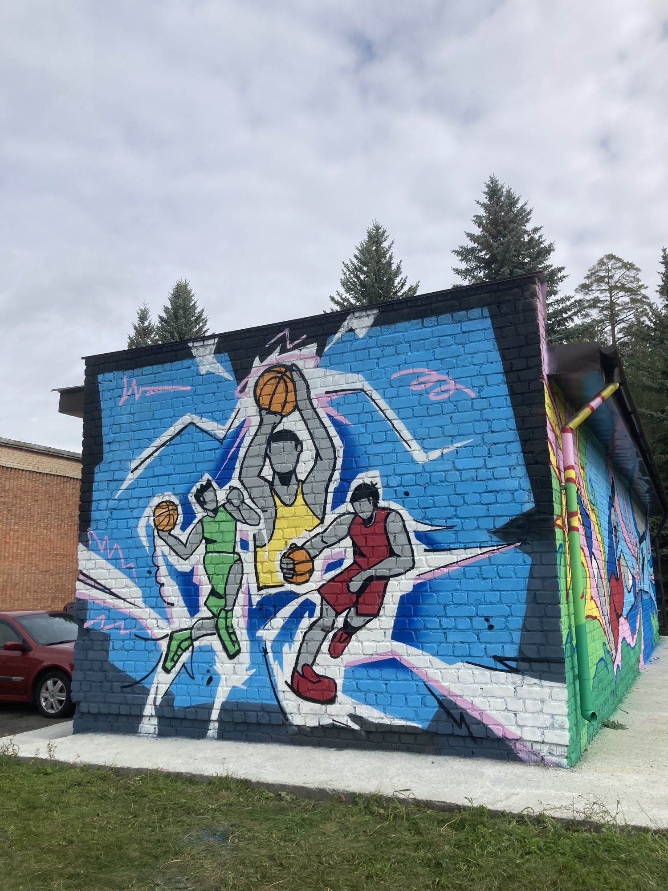
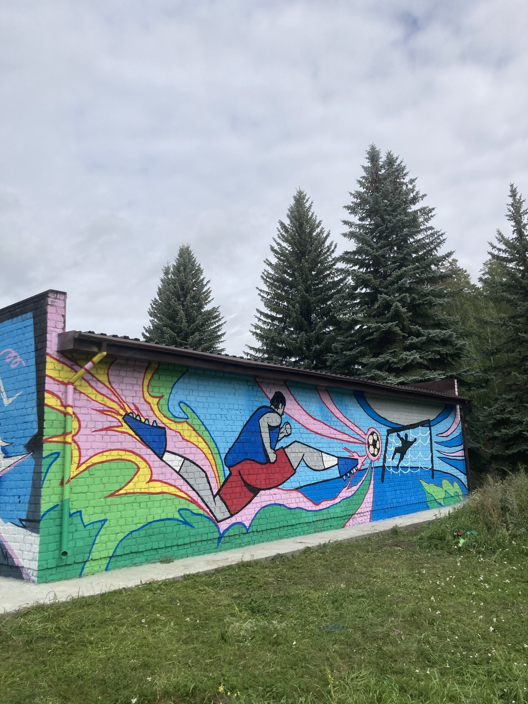

Все работы
Работы участников проектной смены «Люди и города»
Снегирь Снежок
Кочура Анна, 5 отряд · 2026
Кот-инопланетянин
Макейкина Дарья, 5 отряд · 2026
Борзая собака
Левыкина Анастасия, 4 отряд · 2026
Дилофозавр
Агеева Карина, 3 отряд · 2026
Ворон
Глазырина Анна, 3 отряд · 2026
Кролик
Шинкарева Анна, 3 отряд · 2026
Бадди
Власова Валерия, 3 отряд · 2026
Кошка-модница
Литвинова Анастасия (HyunBang), 4 отряд · 2026
Осьминог
Хлынова Мария, 4 отряд · 2026
Собачка
Добрачеева Маргарита, 3 отряд · 2026
Голубь
Белобородова Вероника, 3 отряд · 2026
Такса
Зарипова Алиса, 4 отряд · 2026
Перри-утконос
Сесекина Есения, 4 отряд · 2026

Красавица Сунгуль
2022

Баскетбол
2023

Футбол
2023